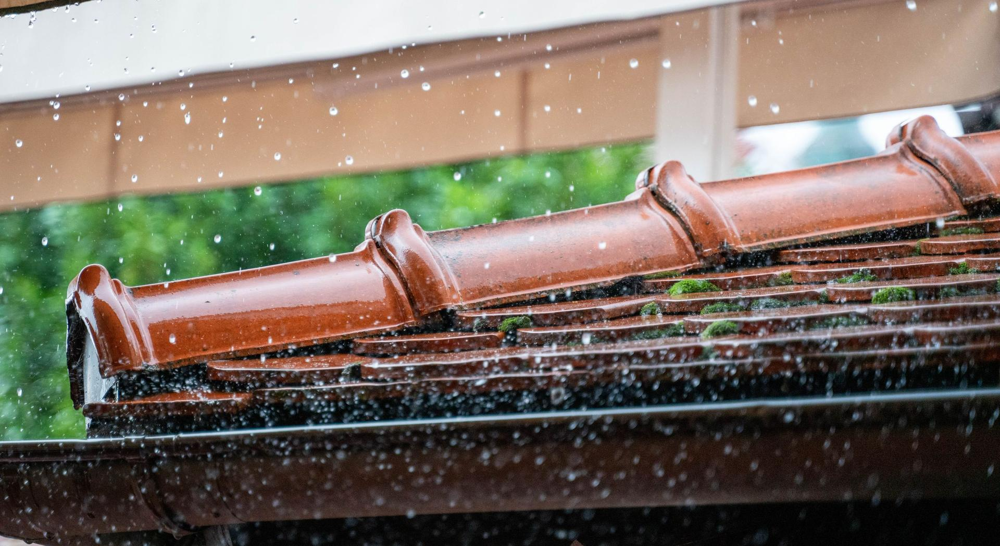
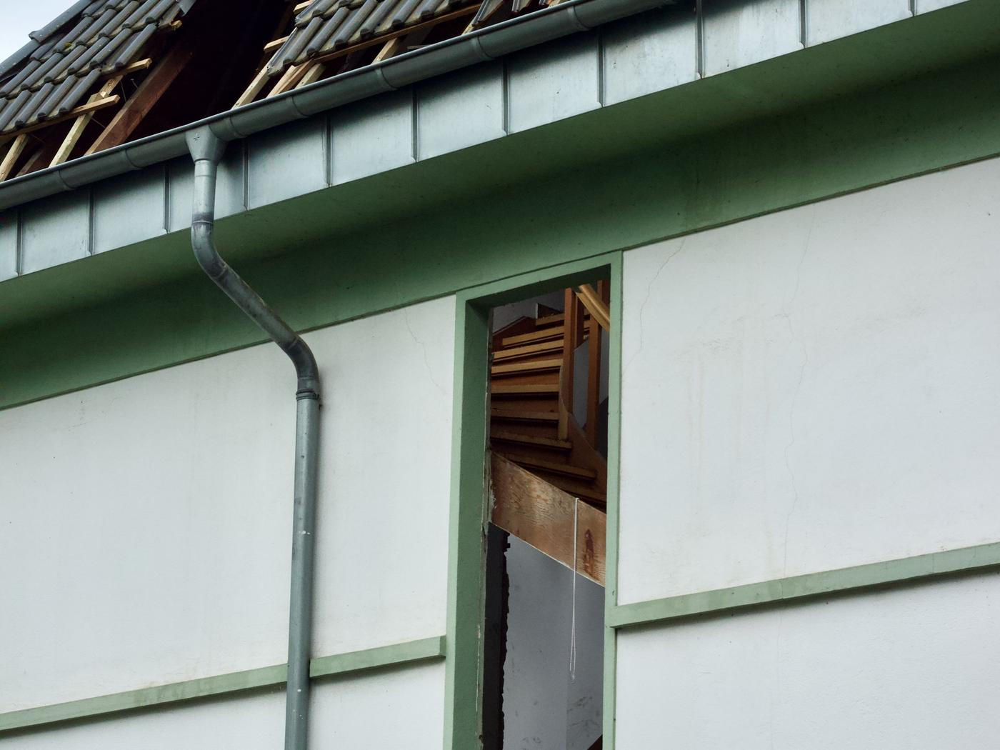
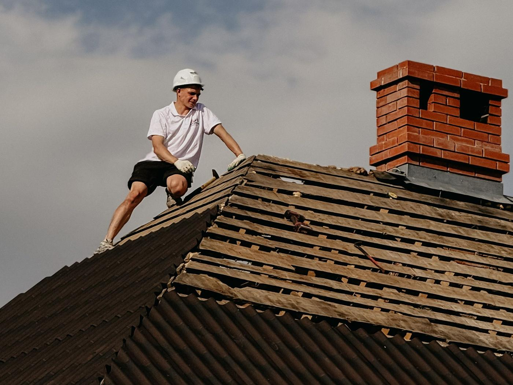
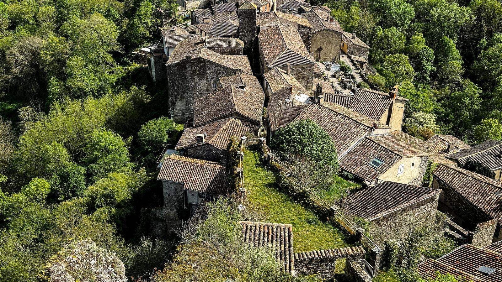
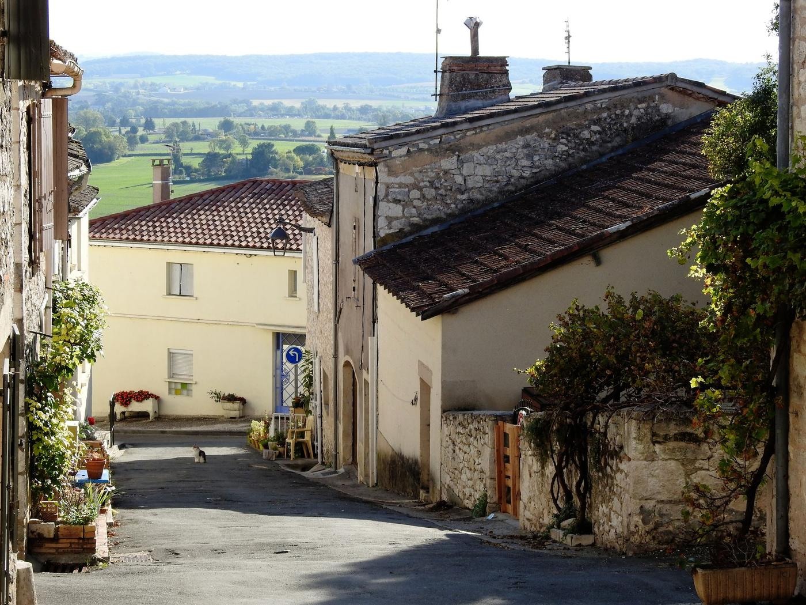

Auch · Mirande · Vic-Fezensac · tout le Gers
Fuite de toiture ? Il intervient sous 24 h.
Il trouve d’où vient l’eau, met la maison hors d’eau, répare, et vous montre les photos.
Photo d’illustration : pluie battante sur une rive de toit.
Couvreur dans le Gers Fuite et urgence
L’eau entre rarement là où la tache apparaît.
Une infiltration suit un chevron, longe une panne et ressort trois mètres plus loin. C’est pour ça qu’un diagnostic au téléphone ne vaut rien, et qu’il faut monter voir.
- Intervention d’urgence sous 24 heures
- Recherche de fuite sur le toit, pas au téléphone
- Bâchage pour mettre la maison hors d’eau tout de suite
- Photos et devis détaillés pour votre assurance
Signaler ma fuite
Trois champs, une minute. Warren vous rappelle lui-même pour caler le diagnostic, gratuit.
Ce qui coûte cher, ce n’est pas la tuile.
Une tuile cassée se remplace pour presque rien. Ce qui coûte cher, ce sont les semaines de pluie qui sont passées par le trou avant que quelqu’un monte voir.

L’eau voyage
Une infiltration entre à un endroit et ressort trois mètres plus loin. La tache au plafond n’indique jamais le point d’entrée : il faut monter.
L’isolant est perdu
Une laine mouillée se tasse et ne remonte pas. Elle se remplace, et pour ça il faut ouvrir le plafond.
Le bois pourrit
Liteaux et chevrons humides en permanence se ramollissent. Le remplacement du support n’a plus rien à voir, en prix, avec une réparation.
L’assurance regarde la date
Après un orage ou une tempête, la déclaration se fait en général sous cinq jours ouvrés. Le devis et les photos servent au dossier.
Mettre hors d’eau, trouver, réparer.
Une réparation bien faite, c’est un point d’entrée identifié et une photo qui le montre. Sinon la fuite revient à l’orage suivant.
- 01
Vous appelez
Vous décrivez la fuite. En urgence, le passage se fait sous 24 heures.
- 02
Mise hors d’eau
Si le toit est ouvert, bâchage immédiat pour protéger l’intérieur en attendant la réparation.
- 03
Recherche de la fuite
Tuiles, faîtage, rives, noues, solins de cheminée : on remonte le chemin de l’eau jusqu’au point d’entrée.
- 04
Réparation
Tuiles remplacées, solin ou faîtage repris, photos remises, et un avis franc sur ce qui tiendra.
Compris à chaque intervention
- Recherche du vrai point d’entrée
- Bâchage si le toit est ouvert
- Remplacement des tuiles touchées
- Reprise du faîtage et des solins
- Photos avant et après
- Devis détaillé pour l’assurance
Ses chantiers, pas une banque d’images.
Mirande, Auch, et ailleurs dans le Gers : les photos que Warren prend lui-même sur ses chantiers, maisons comme commerces.


L’eau qui entre, l’eau qui s’écoule.
Une couverture saine ne retient pas l’eau : elle la conduit. Tout l’enjeu d’une réparation est de lui rendre ce chemin.

Photos d’illustration du métier. Ses vrais chantiers sont plus haut, et vos propres photos vous sont remises pour l’assurance.
Combien coûte une réparation de fuite ?
Une réparation se chiffre après avoir trouvé d’où vient l’eau. Un prix annoncé avant d’être monté serait de la devinette, et vous le paieriez deux fois.
Tuiles remplacées, solin ou faîtage repris, point d’entrée traité.
Bâchage après orage pour protéger la maison en attendant la réparation.
Le chiffrage est gratuit, remis après diagnostic, détaillé poste par poste. Rien ne s’ajoute en cours de chantier sans votre accord.

Après la grêle, c’est le toit qui parle.
Tuiles fêlées, faîtage déplacé, rive arrachée : faites constater vite. La déclaration à l’assurance se fait en général sous cinq jours ouvrés.
Ce que disent ses clients.
Ce qu’il ne fait pas :
Tout le Gers, depuis Mouchès.
L’atelier est à Mouchès, entre Auch et Mirande : le centre du département est à moins d’une demi-heure. La Haute-Garonne et les Pyrénées-Atlantiques se font aussi, sur demande.
- Auch
- Mirande
- Vic-Fezensac
- Masseube
- Marciac
- Seissan
- Fleurance
- L’Isle-Jourdain
- Condom
- Gimont
- Lectoure
- Eauze
- Marciac
- Samatan
- Lombez
- Nogaro
- Riscle
- Montesquiou
- Pavie
- Barran
- Castelnau-Barbarens
- Saint-Jean-le-Comtal
- Montréal
- Plaisance
- Mauvezin
Votre commune n’est pas dans la liste ? Un appel suffit pour savoir si le déplacement est possible.

Vous vous demandez…
Une question qui n’est pas là ? Vous aurez l’artisan au bout du fil, pas un commercial.
06 16 95 49 47Intervenez-vous vraiment sous 24 heures ?
Comment trouvez-vous l’origine d’une fuite ?
Faites-vous le bâchage en attendant ?
Mon assurance prend-elle en charge ?
Une réparation suffit-elle ou faut-il tout refaire ?
La visite coûte-t-elle quelque chose ?
Intervenez-vous sur les toits plats et le bac acier ?
Ma tuile n’est plus fabriquée, que faire ?
De l’eau qui entre ? Appelez maintenant.
Une tache au plafond, une tuile au sol, un bruit d’eau dans les combles : décrivez, il vous rappelle et il vient sous 24 heures.
- Un rappelDans la journée, par Warren lui-même.
- Un diagnosticSur le toit, gratuit, photos à l’appui.
- Un devis écritPoste par poste, sans travaux superflus.
- Vous décidezRien n’est engagé tant que rien n’est signé.
Atelier : Los Beasos, 32300 Mouchès
Demander mon devis
Trois champs, un rappel dans la journée.